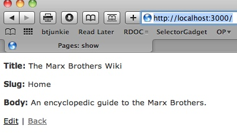

Over the past two years, the Ruby on Rails application framework has garnered a cottage industry of hosting and service providers, an expansive and impressive array of development tools, and a wide variety of complementary libraries -- called gems and plug-ins in Ruby parlance -- that increase the capabilities of the software. For example, Engine Yard and Heroku are just two companies that provide virtual and headache-free Rails software hosting; the colorfully-named Oink and Bullet profile memory usage and performance, respectively; and Clearance and Sunspot provide off-the-shelf authentication and fast, indexed search.
Since 2007, the Rails community has grown, too. The global legion of Rails developers is vibrant, helpful, and always eager to improve the software. Indeed, it's not hyperbole to say the community is hell-bent on improving Rails, with coders constantly leapfrogging one another to build something better. Iteration after iteration, features quickly evolve from nascent, to utilitarian, to powerful, to elegant, and ultimately to indispensable. In many instances, gems and plug-ins the community finds essential are enshrined in the Rails core. Rails's named scopes -- a query shorthand -- followed that very trajectory, as did nested forms, a fairly recent addition that supplanted previous attempts to create and edit multiple models within the same HTML form. Indeed, perhaps the most difficult task for Rails developers is keeping pace with change. (Luckily, a number of weekly Ruby and Ruby on Rails podcasts organize and present trends and best practices.)
Rails 3, the next major release of Rails, continues the rapid advancement of the toolkit. True to its heritage, the software remains "opinionated", preferring convention over configuration. Rails's core components -- RESTful routes, relationships, validations, templates, and database abstractions -- persist. However, much of the internals of those units have been rewritten or refined. Most notably, and borrowing heavily from Merb, many of Rails's essential features are no longer tightly-coupled. For instance, the data validation conveniences previously available only to a Rails application are now standalone and can be included in vanilla Ruby code. Controller capabilities -- such as rendering partials and templates -- are also independent and can be embedded in any library.
Here, let's look at Rails 3 and its many changes and additions, and create a new Rails 3 application from scratch. As of the middle of February 2010, Rails 3 is a beta pre-release, and the core team is collecting patches, feedback, and documentation to prepare an official release prior to the start of Summer. Nonetheless, the current incarnation of Rails 3 is sufficient for building applications and learning about the multitude of new capabilities.
The number of changes in Rails 3 is too significant to recount fully here. To read a complete list along with supplemental material, consult the Rails 3 Release Notes. Here, however, are some of the alterations most likely to affect developers.
class PostsController
respond_to :html, :xml
def create
@post = Post.create(params[:post])
respond_with(@post)
end
end
In the snippet, respond_with(@post) routes to show to display the new record if @post was saved successfully, or to new if the object failed validations, say.
Again, this is just a small sampling. You can find examples of these new features and more in the next section, which builds a Rails 3 application from scratch.
To run Rails 3, your system must have either Ruby 1.8.7 or Ruby 1.9.2 or a newer release of the programming language and its attendant llibraries and interpreter. It is also beneficial to have the Git software version control system installed on your machine, as Rails 3 and many other influential Rails projects are maintained in Git. Your system should also have a database engine, such as SQLite (version 3), MySQL, or PostgreSQL. A Web server is not required to develop a Rails application, but is usually part of a production deployment.
To create a Rails 3 application, you must have the Rails 3 pre-release gem and all its dependencies. At the moment, you can install the required components with just a few commands. (Check the documentation for Rails 3 before you continue as the specifics may change from release to release.)
$ gem install rails3b Due to a rubygems bug, you must uninstall all older versions of bundler for 0.9 to work Successfully installed mime-types-1.16 Successfully installed mail-2.1.2 Successfully installed text-hyphen-1.0.0 Successfully installed text-format-1.0.0 Successfully installed memcache-client-1.7.8 Successfully installed rack-1.1.0 Successfully installed rack-mount-0.4.7 Successfully installed abstract-1.0.0 Successfully installed erubis-2.6.5 Successfully installed i18n-0.3.3 Successfully installed tzinfo-0.3.16 Successfully installed bundler-0.9.5 Successfully installed thor-0.13.1 Successfully installed rails3b-3.0.1 14 gems installed $ gem install arel --pre Successfully installed activesupport-3.0.0.beta Successfully installed arel-0.2.pre 2 gems installed $ gem install rails --pre Successfully installed activemodel-3.0.0.beta Successfully installed actionpack-3.0.0.beta Successfully installed activerecord-3.0.0.beta Successfully installed activeresource-3.0.0.beta Successfully installed actionmailer-3.0.0.beta Successfully installed railties-3.0.0.beta Successfully installed rails-3.0.0.beta 7 gems installed
The next step is to generate the application. Here, let's build a small wiki. The application creates and administers articles. Each article has a title and some prose, and a new article is created simply by creating a reference to it from the body of an existing page. A reference is any "camel case" word, such as "TheSolarSystem" or "TheOscars".
$ rails wiki
If you run ls -lR to see the contents of the application, a few new files stand out:
source 'http://gemcutter.org' gem "rails", "3.0.0.beta" gem "sqlite3-ruby", :require => "sqlite3"
config.generators do |g| g.orm :active_record g.template_engine :erb g.test_framework :test_unit, :fixture => true end
Your Rails 3 application can use one of a number of compatible object-relational mappers (ORM), template engines, and test frameworks. The generators block specifies your preferences for the application and invokes the proper generator for your models, views, and so on.
There are a few other new files; most, though, should seem familar from Rails 2.3. config/routes.rb serves the same purpose as before, albeit with a much-simplified and more Ruby-like flavor. You'll see an example momentarily.
After you generate the application and edit Gemfile to capture your dependencies, your next step is to collect the gems your application requires. That's the job of the new utility, bundle.
$ bundle installFetching source index from http://gemcutter.org Resolving dependencies Installing abstract (1.0.0) from system gems Installing actionmailer (3.0.0.beta) from system gems Installing actionpack (3.0.0.beta) from system gems Installing activemodel (3.0.0.beta) from system gems Installing activerecord (3.0.0.beta) from system gems Installing activeresource (3.0.0.beta) from system gems Installing activesupport (3.0.0.beta) from system gems Installing arel (0.2.1) from rubygems repository at http://gemcutter.org Installing builder (2.1.2) from system gems Installing bundler (0.9.7) from rubygems repository at http://gemcutter.org Installing erubis (2.6.5) from system gems Installing i18n (0.3.3) from system gems Installing mail (2.1.2) from system gems Installing memcache-client (1.7.8) from system gems Installing mime-types (1.16) from system gems Installing rack (1.1.0) from system gems Installing rack-mount (0.4.7) from system gems Installing rack-test (0.5.3) from system gems Installing rails (3.0.0.beta) from system gems Installing railties (3.0.0.beta) from system gems Installing rake (0.8.7) from system gems Installing sqlite3-ruby (1.2.5) from rubygems repository at http://gemcutter.org with native extensions Installing text-format (1.0.0) from system gems Installing text-hyphen (1.0.0) from system gems Installing thor (0.13.3) from rubygems repository at http://gemcutter.org Installing tzinfo (0.3.16) from system gems Your bundle is complete!
bundle, short for Bundler, downloads and installs all the gems named in Gemfile and any of those gems' prerequisites. bundle can also copy all those dependencies into your application, making your code base self-sufficient. Specifically, if you run bundle pack, the Bundler copies the corpus of gems to vendor/cache.
$ bundle pack Copying .gem files into vendor/cache * bundler-0.9.7.gem * thor-0.13.3.gem * abstract-1.0.0.gem * mime-types-1.16.gem * text-hyphen-1.0.0.gem * rack-mount-0.4.7.gem * rake-0.8.7.gem * text-format-1.0.0.gem * tzinfo-0.3.16.gem * rack-test-0.5.3.gem * builder-2.1.2.gem * erubis-2.6.5.gem * memcache-client-1.7.8.gem * rack-1.1.0.gem * sqlite3-ruby-1.2.5.gem * i18n-0.3.3.gem * activesupport-3.0.0.beta.gem * arel-0.2.1.gem * mail-2.1.2.gem * activemodel-3.0.0.beta.gem * activerecord-3.0.0.beta.gem * actionpack-3.0.0.beta.gem * railties-3.0.0.beta.gem * actionmailer-3.0.0.beta.gem * activeresource-3.0.0.beta.gem * rails-3.0.0.beta.gem $ ls vendor/cache abstract-1.0.0.gem memcache-client-1.7.8.gem actionmailer-3.0.0.beta.gem mime-types-1.16.gem actionpack-3.0.0.beta.gem rack-1.1.0.gem activemodel-3.0.0.beta.gem rack-mount-0.4.7.gem activerecord-3.0.0.beta.gem rack-test-0.5.3.gem activeresource-3.0.0.beta.gem rails-3.0.0.beta.gem activesupport-3.0.0.beta.gem railties-3.0.0.beta.gem arel-0.2.1.gem rake-0.8.7.gem builder-2.1.2.gem sqlite3-ruby-1.2.5.gem bundler-0.9.7.gem text-format-1.0.0.gem erubis-2.6.5.gem text-hyphen-1.0.0.gem i18n-0.3.3.gem thor-0.13.3.gem mail-2.1.2.gem tzinfo-0.3.16.gem
Think of vendor/cache as your application's own gem repository. You can move the code base anywhere and have the gem software and versions you depend on -- no remote repositories required. For example, if you run bundle install after bundle pack, the gems are installed from your application repository to your system.
Fetching source index from http://gemcutter.org Resolving dependencies Installing abstract (1.0.0) from .gem files at /Users/strike/projects/rails3/wiki/vendor/cache Installing actionmailer (3.0.0.beta) from .gem files at /Users/strike/projects/rails3/wiki/vendor/cache Installing actionpack (3.0.0.beta) from .gem files at /Users/strike/projects/rails3/wiki/vendor/cache ... Installing thor (0.13.3) from .gem files at /Users/strike/projects/rails3/wiki/vendor/cache Installing tzinfo (0.3.16) from .gem files at /Users/strike/projects/rails3/wiki/vendor/cache Your bundle is complete!
To create the application, let's generate a scaffold for a page, create the database, seed the database with an initial page, and set up the necessary routes.
To keep things simple, a wiki page record is limited to a handful of fields: a title, a slug (an abbreviation of the title), a body, and timestamps to record when the page was created and when it was last modified. The title and slug are string fields; prose is a text field, and the timestamps are date and time fields. (Of course, a real wiki would have additional fields, such as the most recent author and previous revisions of the page. For brevity, this example also omits users and sessions, formatting, and any kind of authentication and authorization.) You can generate an initial model, set of views, and a controller with the command rails generate scaffold.
$ rails generate scaffold page title:string slug:string body:text --timestamps
invoke active_record
create db/migrate/20100221115613_create_pages.rb
create app/models/page.rb
invoke test_unit
create test/unit/page_test.rb
create test/fixtures/pages.yml
route resources :pages
invoke scaffold_controller
create app/controllers/pages_controller.rb
invoke erb
create app/views/pages
create app/views/pages/index.html.erb
create app/views/pages/edit.html.erb
create app/views/pages/show.html.erb
create app/views/pages/new.html.erb
create app/views/pages/_form.html.erb
create app/views/layouts/pages.html.erb
invoke test_unit
create test/functional/pages_controller_test.rb
invoke helper
create app/helpers/pages_helper.rb
invoke test_unit
create test/unit/helpers/pages_helper_test.rb
invoke stylesheets
create public/stylesheets/scaffold.css
(What happened to ./script/generate? Recall that its now subsumed by the omnipotent rails command.)
Run rake db:create db:migrate to create the database.
$ rake db:create db:migrate == CreatePages: migrating ==================================================== -- create_table(:pages) -> 0.0010s == CreatePages: migrated (0.0011s) ===========================================
The wiki exists now, but is empty. Let's add an initial page to serve as an anchor for all other pages. Edit the file db/seeds.rb and write code to create a new page.
Page.create( :title => 'The Marx Brothers Wiki', :slug => 'Home', :body => 'An encyclopedic guide to the Marx Brothers.')
Run rake db:seed to execute the code. You can verify the page with a quick glance via rails console.
$ rake db:seed (in /Users/strike/projects/rails3/wiki) $ rails console Loading development environment (Rails 3.0.0.beta) irb(main):001:0> Page.all => [#<Page id: 1, title: "The Marx Brothers Wiki", slug: "Home", body: "An encyclopedic guide to the Marx Brothers.", created_at: "2010-02-21 12:24:43", updated_at: "2010-02-21 12:24:43">]
Before proceeding further with the code, let's setup the routes. Two are required: a default route to find the home page and another route to find a page by its slug. Here's the final config/routes.rb
Wiki::Application.routes.draw do |map| resources :pages root :to => "pages#show" end
The rails generate scaffold page automatically created the route on line 2, which is RESTful. The route on line 3 must be added manually. The syntax to specify a default, "root" of the site route, is new in Rails 3. Line 3 says, "Map the route '/' to the 'show' method of the pages controller." The code for the show method will find the home page in the database and display it.
After adding the new root route, delete the file public/index.html to preclude conflicts.
$ rm public/index.html
Let's now turn attention to the page controller. The code for a controller in Rails 3 can be exceedingly spartan. Here is the initial implementation of the controller, with a sole show method.
class PagesController < ApplicationController
respond_to :html
def show
@page = Page.where( :slug => ( params[:id] || 'Home' ) ).first
respond_with( @page )
end
end
As you can see, all the boilerplate typically found in a Rails 2 controller is missing. respond_to lists the formats the controller supports; here, it responds solely to requests for HTML. respond_with is a shorthand for the logic to decide how the controller should proceed.
The syntax for the query is also quite different. The lookup is an example of the Rails 3 relational algebra. You may be wondering why the first suffix is required. where and other operands that express the query do not actually cause the query to execute. Instead, the query sits idly by until the data is actually needed. This is lazy loading, or deferring the query as long as possible. first sparks an actual inquiry from the database.
If you run the application now, you should see something similar to Figure 1.

Let's add more code to the controller. The next listing shows the complete controller.
class PagesController < ApplicationController
respond_to :html
before_filter :get_page, :except => [ :create ]
def create
respond_with( @page = Page.create( params[ :page ] ) )
end
def edit
end
def index
render :action => :show
end
def show
@page ||= Page.new( :slug => params[ :id ] )
if @page.new_record?
render :action => :new
else
respond_with( @page )
end
end
def update
@page.update_attributes( params[ :page ] )
respond_with( @page )
end
private
def get_page
@page = Page.where( :slug => ( params[:id] || 'Home' ) ).first ||
Page.where( :id => params[:id] ).first
end
end
In the controller, the index method merely reflects to the show action with no page identifier, thus rendering the home page. show displays a page, given an ID or a slug (the lookups for all actions are centralized in get_page, further reducing the amount of code); if a page does not exist, a new page is prepared for editing.
The Page model merely validates that all its fields are present.
class Page > ActiveRecord::Base validates_presence_of :body, :slug, :title end
The work to translate the camelcase references to links to other pages occurs in the view for the Page model. A helper function in app/helpers/pages_helper.rb does the heavy lifting, keeping the view minimal.
module PagesHelper
def wikify( page )
return '' if page.body.blank?
page.body.gsub( /^([A-Z][[:alnum:]]*([A-Z][[:alnum:]]*)+)/ ) do |match|
link_to( $1, :action => :show, :id => $1 )
end
end
end
The view is typical.
<p> <b>Title:</b> <%= @page.title %> </p> <p> <b>Body:</b> <%= raw wikify( @page ) %> </p> <%= link_to 'Edit', edit_page_path(@page) %> | <%= link_to 'Back', pages_path %>
The raw operator is new to Rails 3. Counter to previous releases of Rails, all strings are emitted safe, stripped of HTML, by default. If you want to emit a string with HTML, you must use raw.
Beyond the improvements and conveniences shown here, Rails 3 offers better performance than its predecessors, especially in rendering partials. You can also create your own validator classes and take advantage of more streamlined standard validations. For instance, this validation, written by Jeremy Macnally, once required four separate lines of code.
validates :login, :presence => true, :length => {:minimum => 4},
:uniqueness => true, :format => { :with => /[A-Za-z0-9]+/ }
The Rails Guides, the official tutorials for Rails, are currently being updated for Rails 3. You can also find extensive instruction and clever solutions on the blogs of Jeremy Macanally, Yehuda Katz, Gregg Pollack, and other community leaders. A number of popular books are under revision for the new release, too, including the seminal "pickaxe" book, Agile Web Development with Rails.
Martin Streicher is a freelance author and Ruby on Rails developer. You can reach Martin at martin.streicher@gmail.com.